Tour Elentrik
Ontwerpen voor nutskastjes in Tervuren, Kraainem en Sint-Agatha-Berchem. In samenwerking met Treepack.
2023
Boekenkast (Kraainem)
2023
Wilde bloemen (Sint-Agatha-Berchem)
2021
Dierenrace (Tervuren)

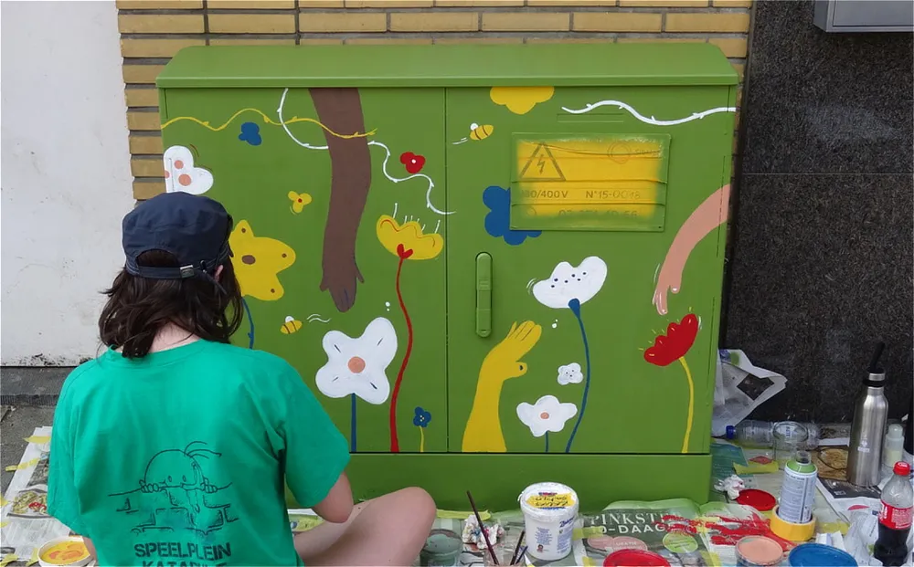
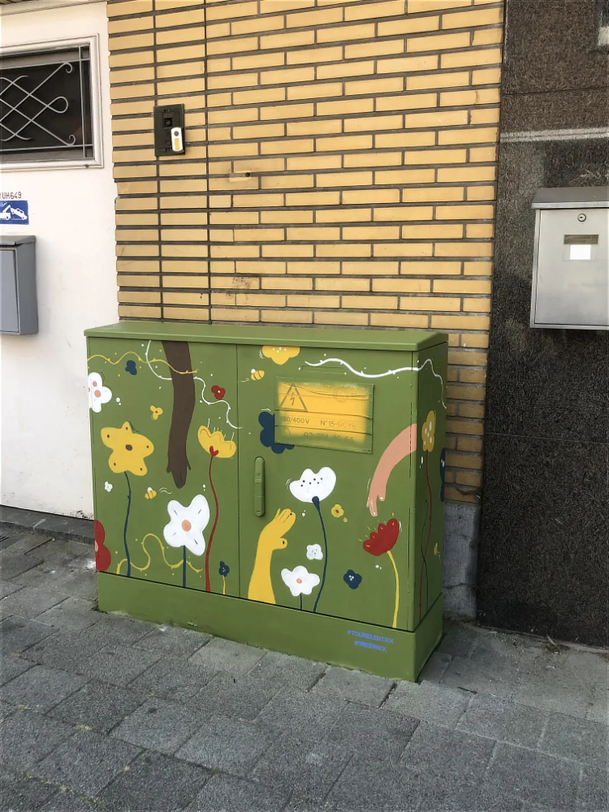
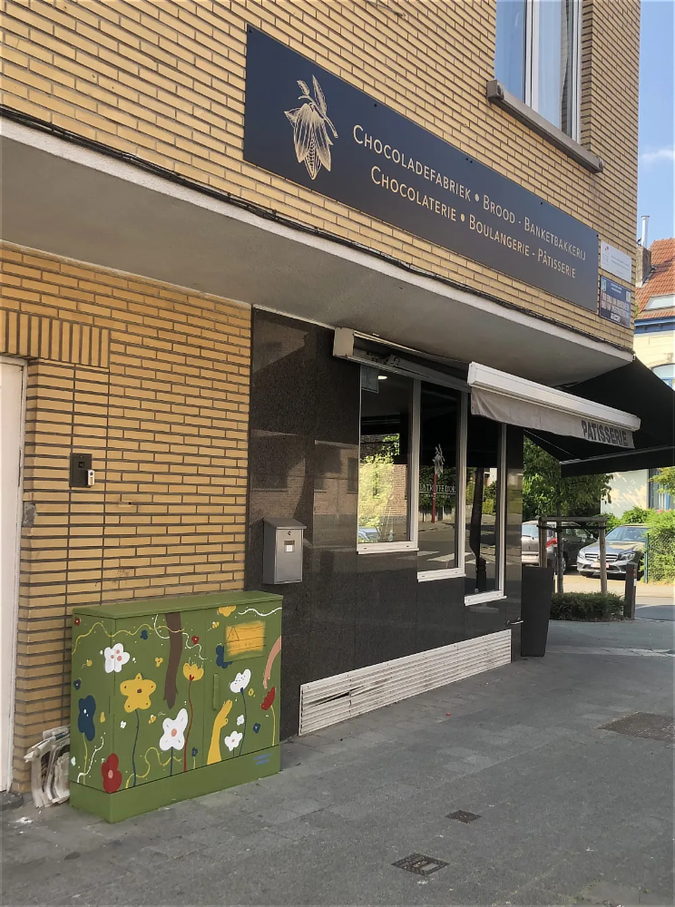
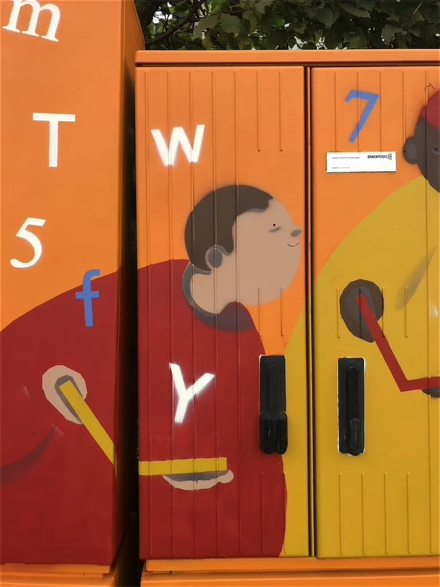
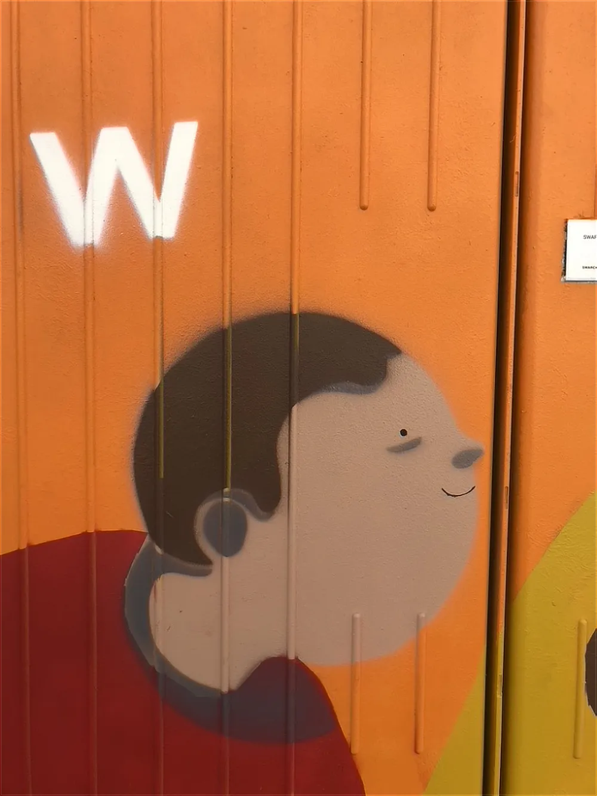
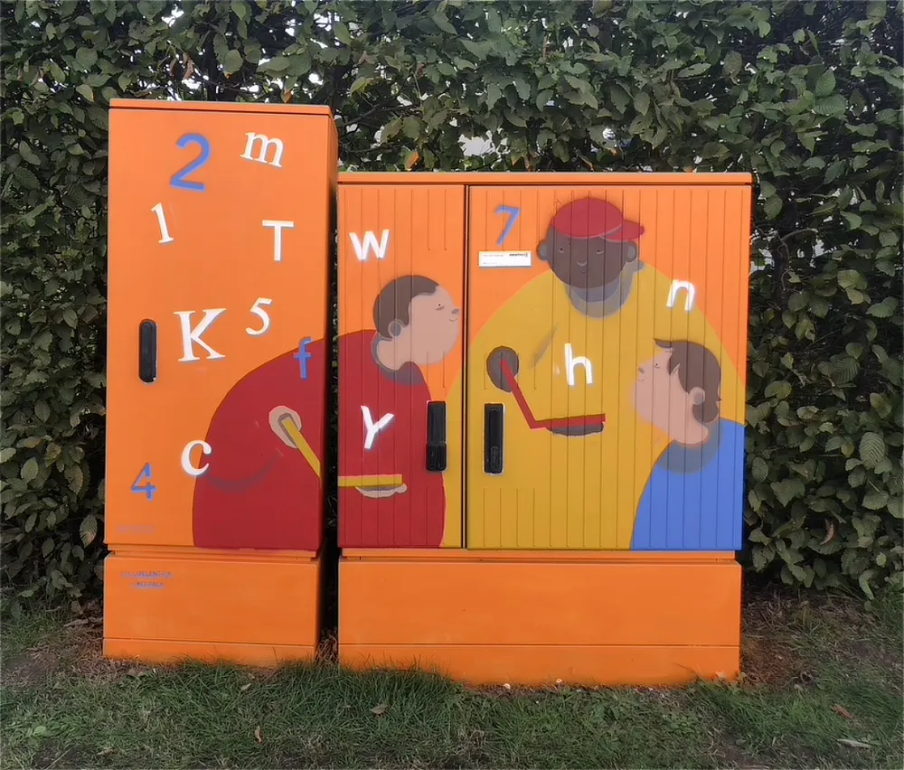
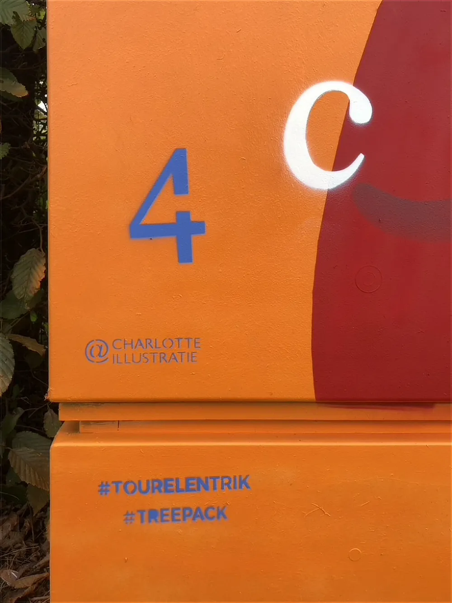
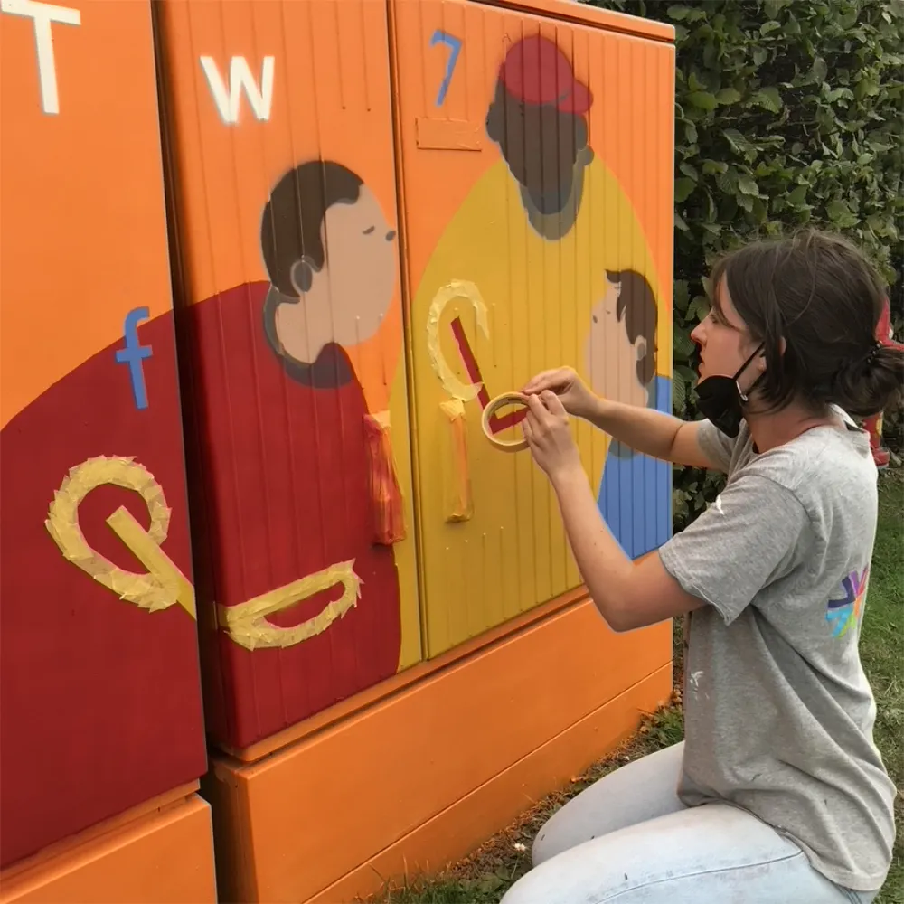
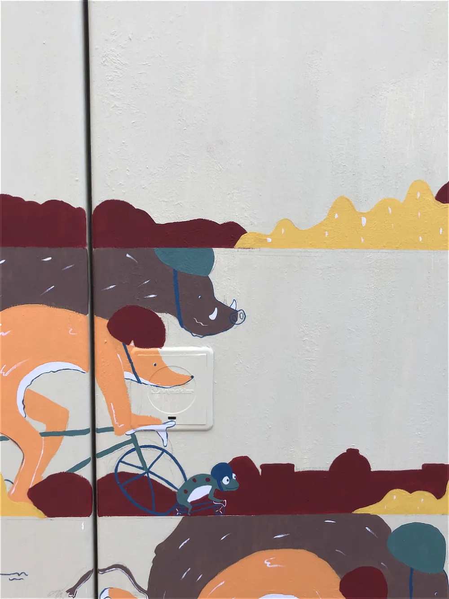
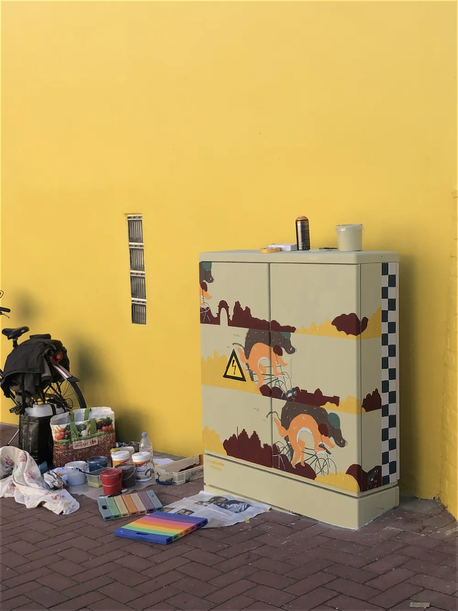
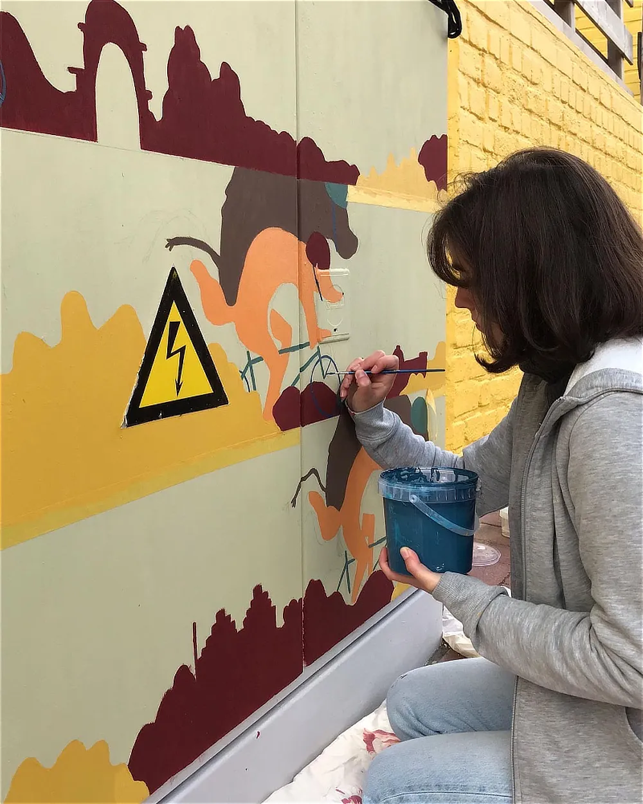